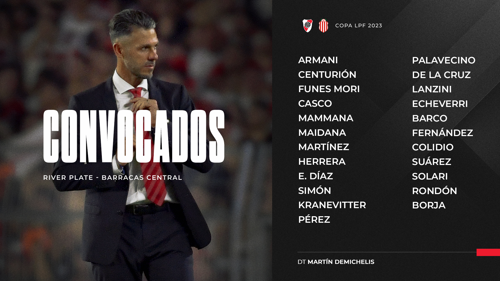
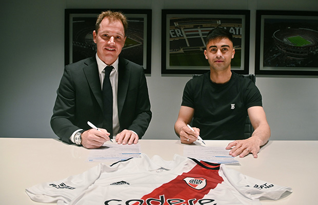

Wikiriver
El Club Atlético River Plate es una entidad polideportiva de Argentina. Fue fundado el 25 de mayo de 1901 en el barrio de La Boca, tras la fusión de los clubes Santa Rosa y La Rosales, y su nombre proviene de la antigua denominación que se le daba en el inglés británico al Río de la Plata.Su principal actividad es el fútbol masculino profesional, el cual participa en la Primera División de Argentina. Disputa sus partidos en el estadio Monumental, el de mayor capacidad en Sudamérica; y el segundo en el continente,n.Con una capacidad para 83 214 espectadores.
Noticias
Convocados para recibir a Barracas Central
El cuerpo técnico comandado por Martín Demichelis dio a conocer la nómina de jugadores que serán tenidos en cuenta para el partido en el Mâs Monumental. Por la segunda fecha de la Zona A de la Copa de la Liga, el Millonario recibirá este domingo a Barracas Central, desde las 21.
Pity Martínez, otra vez en casa
El mediocampista firmó su contrato con River Plate y será refuerzo del plantel de Martín Demichelis.
Con la presencia de Jorge Brito y de Matías Patanian, Gonzalo Martínez selló su regreso a la Institución en una de las oficinas del Mâs Monumental. El talentoso jugador fue clave en su primera etapa con el Manto Sagrado, en la cual obtuvo tres títulos nacionales y cinco internacionales, incluidas dos Libertadores.
"Vamos a seguir trabajando"
Martín Demichelis habló en conferencia de prensa luego del encuentro frente a Argentinos Juniors, por la primera fecha de la Copa de la Liga Profesional.
“No me pasa desapercibido no poder ser los mismos de visitante. Otra vez, el rival se vuelve a poner en ventaja por una pelota parada. Después, nos pusimos a jugar muy bien, donde lo empatamos y lo dimos vuelta. Luego, nos vuelven a empatar de pelota parada... Y en el segundo tiempo volvieron a arrancar mejor que nosotros. Nos falta ser más sólidos y contundentes, hacer más posesiones. Vamos a seguir trabajando”, indicó el entrenador luego del partido en La Paternal.
El entrenador continuó: “En las últimas semanas nos están convirtiendo mucho de pelota parada, pero seguiremos haciendo hincapié. Estamos pasando por un momento donde hay que bloquear y no bloqueamos; cuando hay que disputar el duelo, no lo disputamos. Prestaremos atención para corregirlo”.
“Esperamos los primeros minutos para ver cómo construían ellos, son de los mejores que construyen con el arquero, los tres centrales, Redondo y sus volantes. Después de eso, alzamos la presión y empezamos a ser protagonistas y ganamos muchos más duelos. Hay que sostener eso y extenderlo por los 90 minutos”, explicó Demichelis.
De cara a lo que viene, expresó: “No vamos a perder la manera de trabajar, ni la línea, ni la armonía. Sacaremos esta situación adelante, no hay ninguna duda. Está claro que el golpe de Inter fue muy duro, había una gran ilusión a nivel institucional, estábamos para mucho más. Los muchachos son unos fenómenos, se entrenaron a diario con una gran competitividad interna que hay que destacar”.